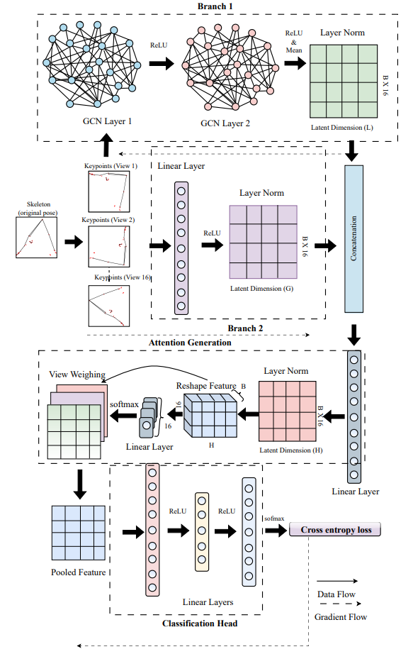

Skeleton-based yoga pose recognition requires representations robust to self-occlusion and inter-subject variability. Existing approaches that rely on raw or weakly normalised 3D skeletal coordinates are sensitive to camera orientation and structural noise, producing overlapping feature distributions that reduce classification accuracy.
We propose Dual-branch Unified Aggregation for Latent Pose Representation (DUAL-Pose), a skeleton-only framework that disentangles intrinsic pose structure from translational and orientational biases using 3D joint coordinates extracted from a commodity pose-estimation pipeline, without requiring RGB imagery or multimodal input. DUAL-Pose employs a dual-branch graph network comprising: (i) a local branch modelling anatomical topology via graph convolutions over the skeletal graph, and (ii) a global branch capturing long-range pose context through bone displacement vectors and intrinsic limb-angle constraints. Per-frame embeddings are fused and aggregated across N synthetic yaw-rotated views using an attention-based mechanism that assigns learned soft weights, emphasising the most discriminative geometric orientations.
Experiments on Yoga-82 and Yoga-16 demonstrate 88.62% and 97.25% top-1 accuracy, improving over the strongest skeleton-based baselines by +9.62% and +1.16% respectively, with only ∼51K trainable parameters — over 350× fewer than existing skeleton-based and image-based approaches.
DUAL-Pose formulates skeleton-based yoga pose recognition as learning a mapping Φ : X → Y, where X ∈ ℝL×V×3 is a skeletal sequence of length L with V joints, each represented by (x, y, z) coordinates, and Y is the set of C pose labels. The pipeline proceeds through three stages.
All joints are root-centred at the hip (u′ = u − uroot), then rotated to a canonical shoulder-axis reference (u″ = Rcan u′). K=16 evenly-spaced synthetic yaw rotations θk = 2πk/K expand viewpoint coverage. A 212-dim feature per frame concatenates 3D joint positions, bone displacement vectors, and limb angles via arccosine-based triplet features.
A local GCN branch propagates features across anatomically adjacent joints via 2 graph-convolutional layers (96 hidden units), mean-pooling node embeddings to a 96-dim local embedding. A parallel global MLP branch maps bone displacement + limb-angle features to a 64-dim kinematic embedding via linear projection + layer normalisation. Both are fused to a 128-dim latent representation.
A learned context vector computes scalar saliency ωτ per view, normalised via softmax into weights γτ. The final descriptor Z = Σ γτeτ up-weights orientations most discriminative for the given class. A two-layer classifier (128→64→C) with cross-entropy loss produces the final prediction.

Implemented in PyTorch and trained end-to-end on a single NVIDIA P100 GPU using AdamW with cosine annealing over 100 epochs. Label smoothing (0.2) and dropout (0.3) are applied in the classifier to counter overfitting on the small skeleton datasets.
| Component | Detail | Output Dim. |
|---|---|---|
| Input feature | Joint positions + displacements + limb angles | 212 |
| GCN Branch (local) | 2× GCN layers · 96 hidden units · mean-pool | 96 |
| MLP Branch (global) | 2-layer linear · layer normalisation · ReLU | 64 |
| Fused representation | Concat + linear projection | 128 |
| View aggregation | Learned soft-weight attention over K=16 views | 128 |
| Classifier head | 128 → 64 → C (softmax) | C classes |
All experiments use exclusively 3D skeletal keypoints — the (x, y, z) world coordinates of 33 body landmarks output by MediaPipe BlazePose — with no RGB image data. This reflects realistic deployment constraints in privacy-sensitive environments such as home fitness and telehealth, where transmitting raw visual data may be impractical or prohibited.
Evaluation Metrics — Top-1 accuracy (%) with 95% Wilson confidence intervals. Statistical significance via two-proportion z-test (one-tailed, H1: DUAL-Pose > baseline): ‡‡‡ p<0.001 ‡‡ p<0.01 ‡ p<0.05 ns not significant. Model compactness measured by total trainable parameter count.
Table 1 — State-of-the-Art Comparison on Yoga-82 & Yoga-16
| Method | Backbone | Modality | Params | Top-1 Acc. (%) | 95% CI | Sig. |
|---|---|---|---|---|---|---|
| Yoga-82 (N = 4,210 test samples) | ||||||
| Image-Based Methods | ||||||
| DenseNet-201 | DenseNet-201 | Image | 18.2M | 74.91 | [73.58, 76.20] | ‡‡‡ |
| Hierarchical-DenseNet | DenseNet-201 | Image | 18.2M | 79.35 | [78.10, 80.55] | ‡‡‡ |
| SYD-Net | MobileNetV2 | Image | 10.2M | 96.00 | [95.36, 96.55] | ns |
| SYD-Net | Xception | Image | 33.5M | 97.29 | [96.75, 97.74] | ns |
| Skeleton / Hybrid Methods | ||||||
| Pose Tutor | DenseNet + KNN | Skeleton | 18.0M | 79.00 | [77.74, 80.20] | ‡‡‡ |
| DUAL-Pose (Ours) | GCN + Attention | Skeleton | 51K | 88.62 | [87.63, 89.54] | — |
| Yoga-16 (N = 255 test samples) | ||||||
| Image-Based Methods | ||||||
| VGG16-Image | VGG-16 | Image | 15.2M | 86.33 | [81.57, 90.01] | ‡‡‡ |
| Skeleton / Hybrid Methods | ||||||
| VGG16-Skeleton | VGG-16 | Skeleton | 15.2M | 96.09 | [92.95, 97.86] | ns |
| YOLOv8-Pose | YOLOv8 | Skeleton | 15.2M | 91.41 | [87.33, 94.26] | ‡‡ |
| DUAL-Pose (Ours) | GCN + Attention | Skeleton | 50K | 97.25 | [94.44, 98.66] | — |
Three orthogonal ablations on Yoga-82 (N=4,210) validate each design decision: (i) branch contribution, (ii) view-aggregation strategy, and (iii) multi-view synthesis. One component is varied at a time; all other settings are held fixed.
Table 2 — Branch Ablation
| Configuration | GCN | MLP | Params | Top-1 (%) | 95% CI |
|---|---|---|---|---|---|
| Local-Only (GCN) | ✓ | ✗ | ∼28K | 79.52 ‡‡‡ | [78.27, 80.71] |
| Global-Only (MLP) | ✗ | ✓ | ∼23K | 88.27 ns | [87.26, 89.21] |
| DUAL-Pose (Ours) | ✓ | ✓ | 51K | 88.62 | [87.63, 89.54] |
Table 3 — View Aggregation
| Strategy | Mechanism | Top-1 (%) | 95% CI |
|---|---|---|---|
| Max Pooling | Hard selection | 87.91 ns | [86.89, 88.86] |
| Self-Attention | Avg. + max pool | 87.93 ns | [86.91, 88.88] |
| Attention Pooling (Ours) | Learned soft weights | 88.62 | [87.63, 89.54] |
Figure 2 — Effect of Multi-View Synthesis (Yoga-82)
We proposed DUAL-Pose, a lightweight dual-branch graph network for fine-grained skeleton-based yoga pose recognition operating on 3D skeletal coordinates alone, without RGB imagery or multimodal input. A GCN branch encodes local anatomical topology via graph-neighbourhood propagation, while a parallel MLP branch captures long-range kinematic context — bone displacement vectors and limb angles — that graph convolutions alone cannot represent. An attention-based view-aggregation module assigns learned soft weights over N=16 synthetically yaw-rotated views, producing discriminative embeddings with improved viewpoint robustness.
On Yoga-82 and Yoga-16, DUAL-Pose improves top-1 accuracy by up to +9.62% and +1.16% over the strongest skeleton-based baselines, using only ∼51K parameters — over 350× fewer than contemporary methods — enabling practical deployment on edge hardware, wearable processors, and resource-constrained platforms.